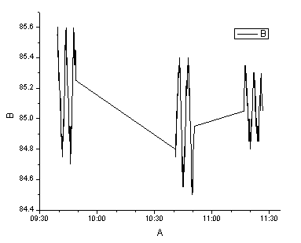
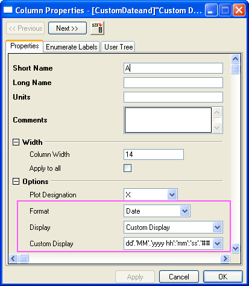
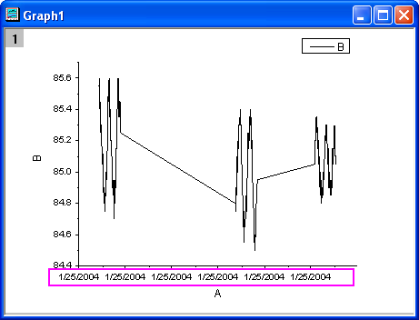
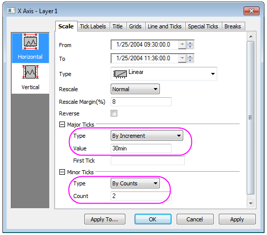
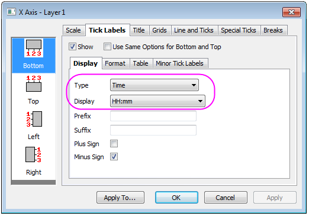

Datums- und Zeitdaten in Diagrammen zeichnen und benutzerdefiniert anpassen
CustomizeTickLabel-DateTime
Zusammenfassung
Dieses Tutorial zeigt Ihnen, wie Sie Datums- und Zeitdaten bearbeiten und sie in einem Diagramm benutzerdefiniert anpassen.
- 
Origin-Version mind. erforderlich: Origin 2015 SR0
Was Sie lernen werden
- Datums- und Zeitdaten in einem Diagramm zeichnen
- Hilfsstrichsbeschriftungen von Datums- und Zeitdaten benutzerdefiniert anpassen
Schritte
- Öffnen Sie ein neues Projekt und importieren Sie die Datendatei Sample\Import and Export\Custom Date and Time.dat aus dem Origin-Programmverzeichnis.
- Klicken Sie doppelt auf A(X), um das Dialogfeld Spalteneigenschaften zu öffnen; setzen Sie Format auf Datum, Anzeige auf Benutzerdefinierte Anzeige und Eingabe auf dd'.'MM'.'yyyy hh':'mm':'ss'.'## im Feld Benutzerdefinierte Anzeige, wie unten zu sehen.
- 
- Klicken Sie auf OK, um zurück zum Arbeitsblatt zu wechseln. Markieren Sie die Spalte col(B) und wählen Sie Zeichnen: Einfache 2D: Liniendiagramm im Origin-Hauptmenü, um ein Liniendiagramm zu zeichnen. Sie werden sehen, dass die Beschriftungen der Hilfsstriche auf der X-Achse alle gleich sind. Der Grund dafür ist, dass die Hilfsstrichsbeschriftungen nur die Datumsinformationen anzeigen, die X-Daten jedoch alle den gleichen Tag haben. Daher müssen Sie das Format der Hilfsstrichsbeschriftung für die Anzeige der Zeit ändern.
- 
- Klicken Sie doppelt auf die X-Achse (oder wählen Sie Format: Achsen: X-Achse im Hauptmenü), um den Dialog Achsen zu öffnen. Wählen Sie das Symbol Horizonal auf der Registerkarte Skalierung und nehmen Sie folgende Einstellungen vor:
- 
- Wechseln Sie zur Seite Unten im Zweig Beschriftung der Hilfsstriche, legen Sie den Typ Zeit fest und wählen Sie die Anzeige HH:mm, wie auch unten zu sehen.
- 
- Klicken Sie auf OK. Die Beschriftung der Hilfsstriche wird jetzt als die entsprechende Zeit im Diagramm unten angezeigt: